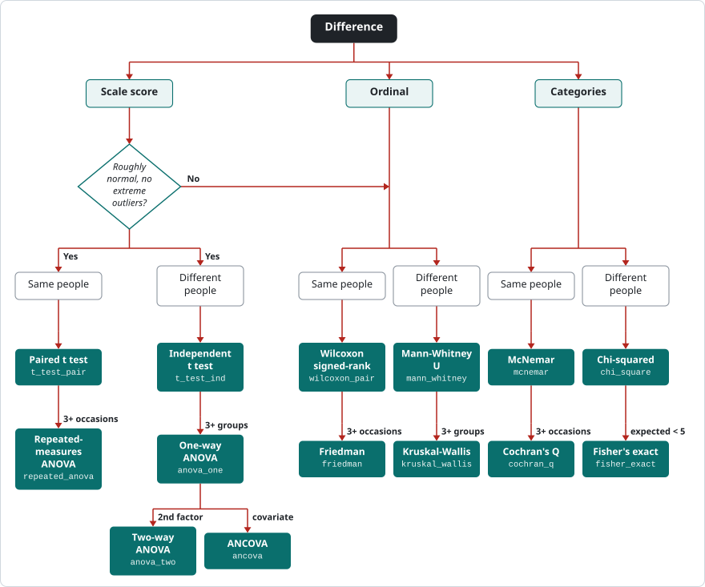
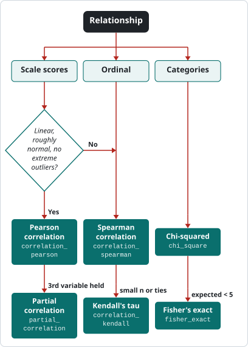
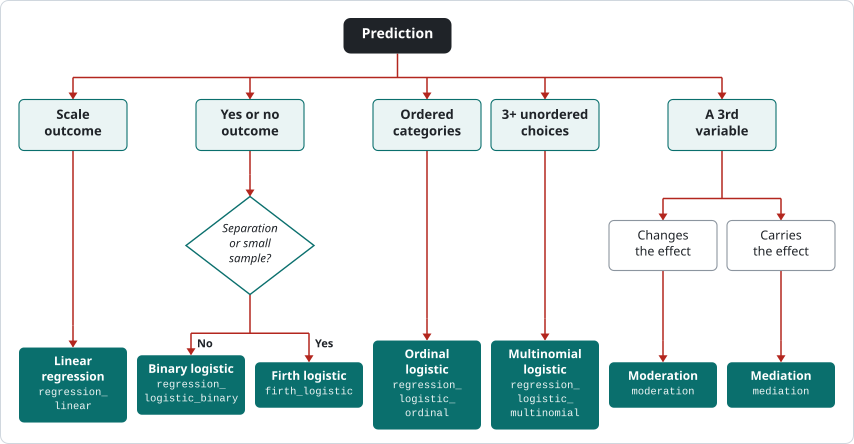
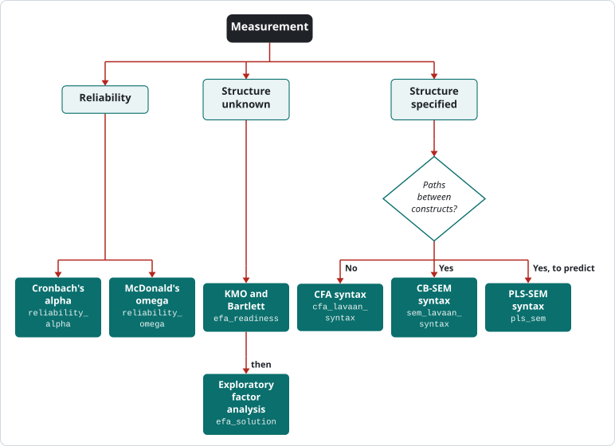

Start from what the research question asks: a difference, a
relationship, a prediction or a measurement. Each chart then asks about
the kind of answer and the design, and ends at a test. Under each test
is the method a plan block stores, as SurveyStudio’s Plan
dialog and sframe_plan() write it.
Roughly normal, no extreme outliers? This is the
check a t test, ANOVA or Pearson correlation relies on. The scores (for
paired data, the differences between them) should be close to a bell
shape, with no extreme values pulling the mean. With about 30 or more
per group, mild skew does no harm.
sframe_assumption_results() runs the check: Shapiro-Wilk,
skewness and kurtosis, and Levene and Brown-Forsythe tests for equal
spread. Unequal spread alone does not send you to a rank test, since the
independent t test then uses Welch’s version. A No, or ordinal answers
such as a single Likert item, lead to the rank tests.
Difference between groups or occasions
From a test for 2 groups or 2 occasions, a 3rd group or occasion leads to the test below it. See Compare groups, Compare the same people over time and Test an association between categories.

Relationship between variables
Two categorical variables go to the same chi-squared test as a difference between groups, reported with Cramer’s V or phi. See Measure how answers go together.

Predict an outcome
The type of the outcome picks the model. A 3rd variable that changes the strength of an effect is moderation; one that carries it is mediation. See Predict an outcome.

Measure a construct
Check readiness before an exploratory factor analysis. CFA, CB-SEM and PLS-SEM are written as model syntax, ready to fit in lavaan or seminr. See Score a scale and check its reliability and Check structure and write model syntax.
